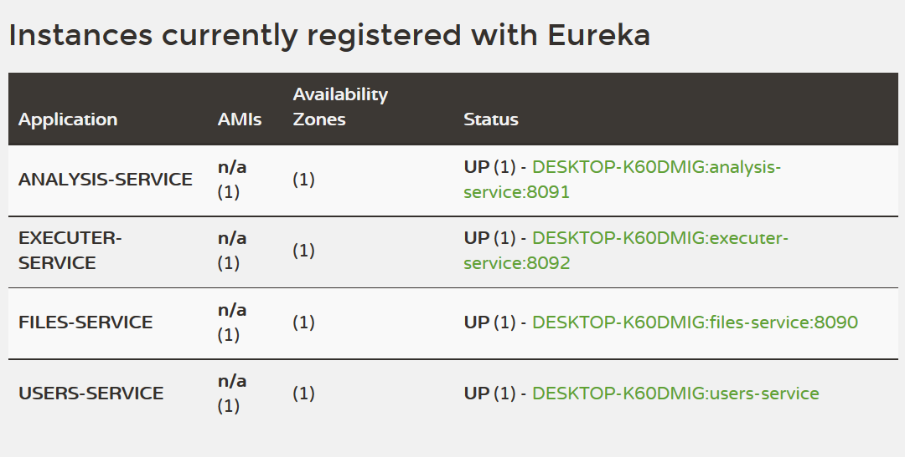

home / 2018.03.26 19:01 /java /cloud /microservices /spring boot /spring cloud netflix
Now that we have some microservices, we need to look at a simple way to make them interact with each other and give rise to the functionality we expect from our system. We want our system to have a few features to make our work easier:
To bring all the above mentioned functionality into our project we’ll rely on the Spring Cloud Netflix project. The first part of this project we’ll use is the service registration and discovery tool Eureka. Once we have an Eureka server set up, our services will be able to communicate with it it, to register themselves with it and to obtain URLs for services they need to work with from Eureka.
First, run over to the Spring Initializr and generate a project named com.msdm.eureka with Eureka Server dependency. Download it and copy it into your workspace. Then, open the project and add the @EnableEurekaServer annotation to the main application class EurekaApplication. Also, add the following to your application.properties file:
eureka.client.register-with-eureka=false
eureka.client.fetch-registry=false
server.port=8761
Now you can start your service and navigate to localhost:8761 in your browser to see that you have a running Eureka server.
Next, we need to make a few changes to the pom.xml file in one of your other microservices, let’s say the users service:
[...]
<properties>
[...]
<spring-cloud.version>Dalston.SR4</spring-cloud.version>
</properties>
<dependencies>
[...]
<dependency>
<groupId>org.springframework.cloud</groupId>
<artifactId>spring-cloud-starter-eureka</artifactId>
</dependency>
</dependencies>
<dependencyManagement>
<dependencies>
<dependency>
<groupId>org.springframework.cloud</groupId>
<artifactId>spring-cloud-dependencies</artifactId>
<version>${spring-cloud.version}</version>
<type>pom</type>
<scope>import</scope>
</dependency>
</dependencies>
</dependencyManagement>
[...]
We need to ensure that the Eureka client dependency is downloaded for a specific spring cloud version for the required @EnableDiscoveryClient
annotation to be available in your project. You need to add that
annotation to you microservice application class. You also need to add a
line with the name of the microservice in your application.properties file. For the users service, this line would be: spring.application.name=users-service. Now you should start your users service, then navigate to localhost:8761.
Give it a minute and your new service should now show up as running.
You will need to make these changes for all the microservices we have
created in the previous sections of this workshop and start them up to
see them connect to the Eureka server:

Now we need to refactor our executer service, the one service that communicates with other services in the system. We want our executer service to be able to automatically find and use other services in the system automatically, by looking at what services are registered in Eureka. We will be referring to services by name, from now on, instead of by IP and port.
We will start by adding a few dependencies to the executer pom.xml,
the xml file will look like this in the end (the versions your spring
cloud and spring boot will have may be different depending on when you
used Spring Initializr to generate your projects):
<?xml version="1.0" encoding="UTF-8"?>
<project xmlns="http://maven.apache.org/POM/4.0.0" xmlns:xsi="http://www.w3.org/2001/XMLSchema-instance"
xsi:schemaLocation="http://maven.apache.org/POM/4.0.0 http://maven.apache.org/xsd/maven-4.0.0.xsd">
<modelVersion>4.0.0</modelVersion>
<groupId>com.msdm</groupId>
<artifactId>executer</artifactId>
<version>0.0.1-SNAPSHOT</version>
<packaging>jar</packaging>
<name>executer</name>
<description>Demo project for Spring Boot</description>
<parent>
<groupId>org.springframework.boot</groupId>
<artifactId>spring-boot-starter-parent</artifactId>
<version>1.5.8.RELEASE</version>
<relativePath/> <!-- lookup parent from repository -->
</parent>
<properties>
<project.build.sourceEncoding>UTF-8</project.build.sourceEncoding>
<project.reporting.outputEncoding>UTF-8</project.reporting.outputEncoding>
<java.version>1.8</java.version>
<spring-cloud.version>Dalston.SR4</spring-cloud.version>
</properties>
<dependencies>
<dependency>
<groupId>org.springframework.boot</groupId>
<artifactId>spring-boot-starter-actuator</artifactId>
</dependency>
<dependency>
<groupId>org.springframework.cloud</groupId>
<artifactId>spring-cloud-starter-eureka</artifactId>
</dependency>
<dependency>
<groupId>org.springframework.cloud</groupId>
<artifactId>spring-cloud-starter-ribbon</artifactId>
</dependency>
<dependency>
<groupId>org.springframework.boot</groupId>
<artifactId>spring-boot-starter-web</artifactId>
</dependency>
<dependency>
<groupId>org.springframework.boot</groupId>
<artifactId>spring-boot-starter-test</artifactId>
<scope>test</scope>
</dependency>
</dependencies>
<dependencyManagement>
<dependencies>
<dependency>
<groupId>org.springframework.cloud</groupId>
<artifactId>spring-cloud-dependencies</artifactId>
<version>${spring-cloud.version}</version>
<type>pom</type>
<scope>import</scope>
</dependency>
</dependencies>
</dependencyManagement>
<build>
<plugins>
<plugin>
<groupId>org.springframework.boot</groupId>
<artifactId>spring-boot-maven-plugin</artifactId>
</plugin>
</plugins>
</build>
</project>
Some new appearances are actuator and ribbon. The one we are interested in eight now is Ribbon, a client-side load balancer, fully integrated with RestTemplate. All we need to do to enable RestTemplate to find services by name, and load-balance calls to a service in case we have multiple instances of that services, is to add a @LoadBalanced annotation in our code, where RestTemplate is created, in ExecuterApplication
@LoadBalanced
@Bean
public RestTemplate restTemplate() {
return new RestTemplate();
}
We also need to change the values used to refer to our services from
IP and port to the service name. To make our properties more manageable,
we will first change the extension of our properties file, renaming it
from application.properties to application.yml. Once we have done that, we can rewrite its contents in YAML format:
server:
port: 8092
analysis:
url: http://analysis-service
endpoint:
analyses: analyses
scheduler: scheduler
failure: result/failed
success: result/success
file:
url: http://files-service
endpoint:
download: download
spring:
application:
name: executer-service
eureka:
instance:
leaseRenewalIntervalInSeconds: 1
leaseExpirationDurationInSeconds: 2
client:
serviceUrl:
defaultZone: http://127.0.0.1:8761/eureka/
healthcheck:
enabled: true
lease:
duration: 5
management:
port: 8093
context-path: /details
security:
enabled: false
As you can observe, we no longer refer to the analysis service URL as http://localhost:8091, we have replaced it with http://analysis-service,
and we have done the same with the file service. If we now run our
system and submit a new analysis to the analysis service, we will see
that the executer service is able to retrieve and execute the analysis,
communicating with the analysis and file service without any problems.
And that actuator dependency
we also added in the POM file? It’s Spring Boot’s way of offering us a
set of diagnosis tools for our microservice. It will make available a
set of URLs that retrieve operation data about your microservice, like:
http://localhost:8093/details/health for a general health overviewhttp://localhost:8093/health/dump for a memory dumphttp://localhost:8093/health/beans to see a list of instantiated beansAnd others. It has its own property entries in the YAML file, and in
our example we are running without any security, on a different port
than our main server and at the /details context path.